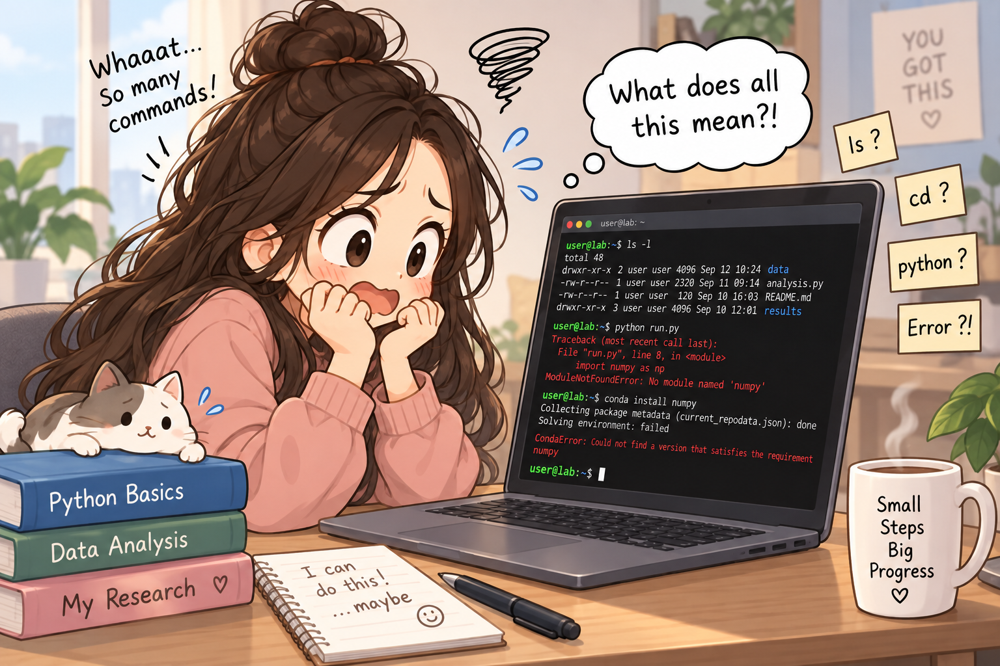
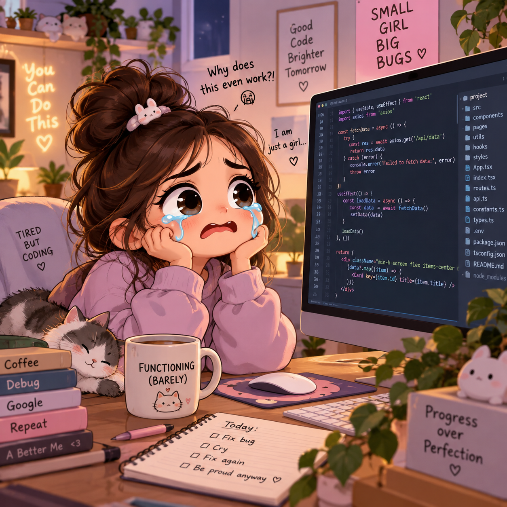
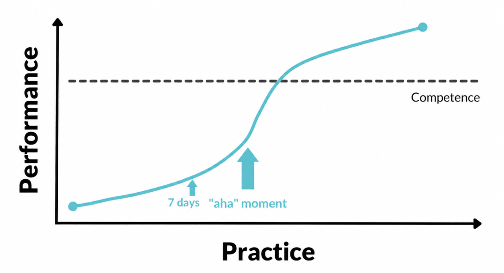

60 lessons · Programming fundamentals to scientific Python
Before jumping into This tutorial.
Prolouge
This tutorial is for students, researchers, and curious learners
who want to use Python but feel nervous whenever they see code,
a terminal window (Black window with lots of text), or a colorful error message pops up on the screen of a friends computer.

60 guided lessons
0 experience required
1 concept at a time
⚠️ This is a beginner-first tutorial. If you already write Python
programs, the lessons may not be for you.
A small story of mine

A small story from my journey
I once thought coding was not for me
When I was in Class 11, I took a coding course for the first time.
I was very excited to learn programming, but the curriculum was
extremely descriptive in the beginning. I became
scared. One fine day, I cried in front of my computer, thinking,
“I cannot do this. Coding is not my cup of tea.”
However, I did not give up. I continued learning C programming by following the
curriculum one concept at a time. By the end of the course, I had
developed a better understanding of programming and achieved a good
score and till date I am leaning new concepts.
If I could overcome that fear and learn programming, why can’t you?
The aims of this tutorial
In this tutorial, we will learn Python in a fun way. Now a days we It is a difficult task for all of us to sit and read. The tutorial will be friendly for vivid readers as well as those who don't like reading long paragraph. Long paragraphs will be sqeezed in toggle menu. You can check then if you feels like. If you want you can skip the 1st 10 lessions. Go to to coding directly. If you can't understand any term you can come back to respective section to check what it is. Also there is no shortcut for leaning. After every step you need to practie.
Once you practice you will get to know the error you are getting. Just reading will not help you. Also please give one hour for a day. !5 minutes for reading one sectionand 45 minutes for coding. There will be lots of question for practice. Just try to solve them.
What do you need for this tutorial?
01
A computer/ laptop
02
1 hours of dedication
⏱ How long will it take me to learn Python?
The learning process never truly ends. After approximately
seven days of regular practice, you can begin writing
small Python programs. From there, you will continue learning throughout
your life as you encounter new problems, tools, and ideas.
The best way to become a better programmer is to use programming in your
daily work. Automate a repetitive task, analyse a small dataset, perform
a calculation, or create a simple figure. Every practical problem you
solve will improve your programming ability.

💡 You do not need to learn all of Python
It is almost impossible to learn every part of Python and you do not
need to. Learn the fundamentals first, and then learn additional tools when your
work requires them and focus on the area connected to your work or
interests.
How this tutorial will teach you
There will be lots of commands(syntax), Don't by heart them in the 1st instance.
You will find most of the command related to the real world activities. Just try to relate them.
If something is new and you can't remember them then come again when you need them.
At the end you are the smartest one, not machine.
Remember:
You do not need to be naturally talented at programming. You need
curiosity, patience, and the confidence to make mistakes. An error
message does not mean that you cannot program—it means that Python is
showing you where to look next. And celebrate for each sectionyou complete.
Happy coding!
Learn by building
Python, one lesson at a time.
A carefully ordered course that begins with what programming means, explains language types and development tools, and gradually reaches practical scientific computing, data analysis, and machine learning.
60 lessons6 stages1 new lesson each day
How this course will grow
The complete learning path is ready, but the lessons are intentionally empty. We will write and add one detailed lesson at a time so that the course stays easy to follow and easy to edit.
I
Programming and Setup
Understand programming, language types, Python, installation, interpreters, terminals, IDEs, and source files.
II
Core Python
Use variables, numbers, strings, Boolean logic, input, output, and Python's essential collections.
III
Logic and Functions
Make decisions, repeat tasks, design reusable functions, understand scope, and build small programs.
IV
Practical and Reliable Python
Work with packages, environments, files, exceptions, debugging, tests, clean code, and Git.
V
Intermediate Python and OOP
Learn classes, inheritance, dataclasses, comprehensions, generators, decorators, and context managers.
VI
Scientific Python and Data
Use NumPy, Pandas, Matplotlib, SciPy, scientific file formats, automation, and machine learning.
1. What is programming language?
Stage I · Programming and SetupPlanned
01
Lesson placeholder
This lesson will be added after Lesson 1.
2. How Computers Follow Instructions
Stage I · Programming and SetupPlanned
02
Lesson placeholder
This lesson will be added after Lesson 1.
3. Machine, Assembly, and High-Level Languages
Stage I · Programming and SetupPlanned
03
Lesson placeholder
This lesson will be added in order.
4. Compiled vs Interpreted Languages
Stage I · Programming and SetupPlanned
04
Lesson placeholder
This lesson will be added in order.
5. Programming Paradigms and Language Uses
Stage I · Programming and SetupPlanned
05
Lesson placeholder
This lesson will be added in order.
6. What Is Python and Why Learn It?
Stage I · Programming and SetupPlanned
06
Lesson placeholder
This lesson will be added in order.
7. Installing Python on Windows, macOS, and Linux
Stage I · Programming and SetupPlanned
07
Lesson placeholder
This lesson will be added in order.
8. The Python Interpreter and Your First Program
Stage I · Programming and SetupPlanned
08
Lesson placeholder
This lesson will be added in order.
9. IDEs: IDLE, VS Code, PyCharm, and Jupyter
Stage I · Programming and SetupPlanned
09
Lesson placeholder
This lesson will be added in order.
10. Files, Comments, Syntax, and Error Messages
Stage I · Programming and SetupPlanned
10
Lesson placeholder
This lesson will be added in order.
11. Variables, Assignment, and Naming Rules
Stage II · Core PythonPlanned
11
Lesson placeholder
This lesson will be added in order.
12. Numbers and Arithmetic Operators
Stage II · Core PythonPlanned
12
Lesson placeholder
This lesson will be added in order.
13. Strings and Text Processing
Stage II · Core PythonPlanned
13
Lesson placeholder
This lesson will be added in order.
14. Booleans, Comparisons, and Logical Operators
Stage II · Core PythonPlanned
14
Lesson placeholder
This lesson will be added in order.
15. Input, Output, f-Strings, and Type Conversion
Stage II · Core PythonPlanned
15
Lesson placeholder
This lesson will be added in order.
16. Lists and List Operations
Stage II · Core PythonPlanned
16
Lesson placeholder
This lesson will be added in order.
17. Tuples and Immutable Data
Stage II · Core PythonPlanned
17
Lesson placeholder
This lesson will be added in order.
18. Sets and Unique Values
Stage II · Core PythonPlanned
18
Lesson placeholder
This lesson will be added in order.
19. Dictionaries and Key–Value Data
Stage II · Core PythonPlanned
19
Lesson placeholder
This lesson will be added in order.
20. Mini Project: A Personal Information Program
Stage II · Core PythonPlanned
20
Mini-project placeholder
This lesson will combine the ideas introduced in Stage II.
21. Decision Making with if, elif, and else
Stage III · Logic and FunctionsPlanned
21
Lesson placeholder
This lesson will be added in order.
22. Nested Conditions and match–case
Stage III · Logic and FunctionsPlanned
22
Lesson placeholder
This lesson will be added in order.
23. for Loops and Iteration
Stage III · Logic and FunctionsPlanned
23
Lesson placeholder
This lesson will be added in order.
24. while Loops and Repetition
Stage III · Logic and FunctionsPlanned
24
Lesson placeholder
This lesson will be added in order.
25. range, break, continue, and Loop Patterns
Stage III · Logic and FunctionsPlanned
25
Lesson placeholder
This lesson will be added in order.
26. Functions and Reusable Code
Stage III · Logic and FunctionsPlanned
26
Lesson placeholder
This lesson will be added in order.
27. Parameters, Arguments, *args, and **kwargs
Stage III · Logic and FunctionsPlanned
27
Lesson placeholder
This lesson will be added in order.
28. Return Values and Variable Scope
Stage III · Logic and FunctionsPlanned
28
Lesson placeholder
This lesson will be added in order.
29. Lambda, map, filter, and Useful Built-ins
Stage III · Logic and FunctionsPlanned
29
Lesson placeholder
This lesson will be added in order.
30. Mini Project: A Menu-Driven Python Program
Stage III · Logic and FunctionsPlanned
30
Mini-project placeholder
This lesson will combine the ideas introduced in Stage III.
31. Modules, Packages, and Imports
Stage IV · Practical and Reliable PythonPlanned
31
Lesson placeholder
This lesson will be added in order.
32. pip and Virtual Environments
Stage IV · Practical and Reliable PythonPlanned
32
Lesson placeholder
This lesson will be added in order.
33. Errors and Exception Handling
Stage IV · Practical and Reliable PythonPlanned
33
Lesson placeholder
This lesson will be added in order.
34. Reading and Writing Text Files
Stage IV · Practical and Reliable PythonPlanned
34
Lesson placeholder
This lesson will be added in order.
35. Working with CSV and JSON Files
Stage IV · Practical and Reliable PythonPlanned
35
Lesson placeholder
This lesson will be added in order.
36. Folders and Paths with pathlib
Stage IV · Practical and Reliable PythonPlanned
36
Lesson placeholder
This lesson will be added in order.
37. Debugging and Logging
Stage IV · Practical and Reliable PythonPlanned
37
Lesson placeholder
This lesson will be added in order.
38. Testing with assert and pytest
Stage IV · Practical and Reliable PythonPlanned
38
Lesson placeholder
This lesson will be added in order.
39. PEP 8, Type Hints, and Clean Code
Stage IV · Practical and Reliable PythonPlanned
39
Lesson placeholder
This lesson will be added in order.
40. Project Structure and Git Basics
Stage IV · Practical and Reliable PythonPlanned
40
Lesson placeholder
This lesson will be added in order.
41. Object-Oriented Programming Concepts
Stage V · Intermediate Python and OOPPlanned
41
Lesson placeholder
This lesson will be added in order.
42. Classes and Objects
Stage V · Intermediate Python and OOPPlanned
42
Lesson placeholder
This lesson will be added in order.
43. Constructors and Attributes
Stage V · Intermediate Python and OOPPlanned
43
Lesson placeholder
This lesson will be added in order.
44. Methods, Encapsulation, and Properties
Stage V · Intermediate Python and OOPPlanned
44
Lesson placeholder
This lesson will be added in order.
45. Inheritance, Polymorphism, and Composition
Stage V · Intermediate Python and OOPPlanned
45
Lesson placeholder
This lesson will be added in order.
46. Dataclasses and Special Methods
Stage V · Intermediate Python and OOPPlanned
46
Lesson placeholder
This lesson will be added in order.
47. List, Set, and Dictionary Comprehensions
Stage V · Intermediate Python and OOPPlanned
47
Lesson placeholder
This lesson will be added in order.
48. Iterators and Generators
Stage V · Intermediate Python and OOPPlanned
48
Lesson placeholder
This lesson will be added in order.
49. Decorators and Context Managers
Stage V · Intermediate Python and OOPPlanned
49
Lesson placeholder
This lesson will be added in order.
50. Intermediate Capstone: A Structured Application
Stage V · Intermediate Python and OOPPlanned
50
Capstone placeholder
This capstone will combine the skills developed in Stage V.
51. NumPy Arrays and Fast Computation
Stage VI · Scientific Python and DataPlanned
51
Lesson placeholder
This lesson will be added in order.
52. NumPy Indexing, Broadcasting, and Vectorization
Stage VI · Scientific Python and DataPlanned
52
Lesson placeholder
This lesson will be added in order.
53. Pandas Series and DataFrames
Stage VI · Scientific Python and DataPlanned
53
Lesson placeholder
This lesson will be added in order.
54. Cleaning and Analysing Data with Pandas
Stage VI · Scientific Python and DataPlanned
54
Lesson placeholder
This lesson will be added in order.
55. Matplotlib and Seaborn Visualization
Stage VI · Scientific Python and DataPlanned
55
Lesson placeholder
This lesson will be added in order.
56. SciPy and Scientific Computing
Stage VI · Scientific Python and DataPlanned
56
Lesson placeholder
This lesson will be added in order.
57. HDF5, NetCDF, and Large Scientific Data
Stage VI · Scientific Python and DataPlanned
57
Lesson placeholder
This lesson will be added in order.
58. Automation, APIs, and Useful Scripts
Stage VI · Scientific Python and DataPlanned
58
Lesson placeholder
This lesson will be added in order.
59. Introduction to Machine Learning
Stage VI · Scientific Python and DataPlanned
59
Lesson placeholder
This lesson will be added in order.
60. Final Capstone: A Scientific Data Project
Stage VI · Scientific Python and DataPlanned
60
Final project placeholder
This capstone will combine the skills developed throughout all six stages.